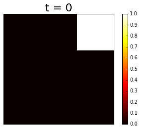
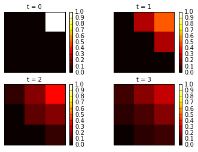
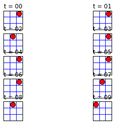
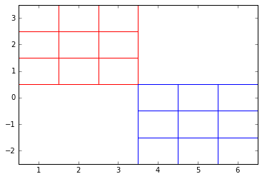
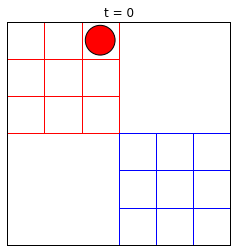
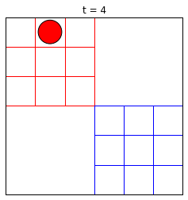
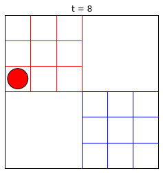
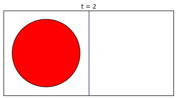
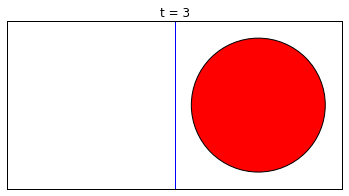
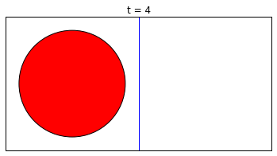

Introduction to Montecarlo Method
import random import matplotlib.pyplot as plt import numpy as np import pylab import seaborn as sns sns.set() %matplotlib inline
Lets calculate the value of PI directly
n_trials = 1000 n_hits = 0 plt.figure(figsize = [8,8]) for iter in range(n_trials): x = random.uniform(-1.0, 1.0) y = random.uniform(-1.0, 1.0) if x**2 + y**2 < 1.0: plt.scatter(x,y,color = "blue") n_hits += 1 else: plt.scatter(x,y,color = "red") print(4.0 * n_hits / float(n_trials)) plt.savefig("test.png")
3.208

- Lets construct the function to run above code multiple time
def direct_pi(N): n_hits = 0 for i in range(N): x = random.uniform(-1.0, 1.0) y = random.uniform(-1.0, 1.0) if x ** 2 + y ** 2 < 1.0: n_hits += 1 computed_pi = 4.0*n_hits / float(n_trials) return computed_pi
n_runs = 100 n_trials = 1000 for run in range(n_runs): pi = direct_pi(n_trials) plt.scatter(run,pi)

Marcob chain Calculation of PI
x, y = 1.0, 1.0 delta = 0.1 n_trials = 5000 n_hits = 0 for i in range(n_trials): del_x = random.uniform(-delta, delta) del_y = random.uniform(-delta, delta) '''to make sure they are inside square''' if (abs(x + del_x) < 1.0 and abs(y + del_y) < 1.0): x = x + del_x y = y + del_y '''to make sure they are inside circle''' if x**2 + y**2 < 1.0: n_hits += 1 plt.scatter(x,y,color = "blue") else: plt.scatter(x,y,color = "red") print 4.0 * n_hits / float(n_trials)
3.0576

- Lets construct the function to run above code multiple time.
def markov_pi(N, delta): x, y = 1.0, 1.0 n_hits = 0 for i in range(N): del_x, del_y = random.uniform(-delta, delta), random.uniform(-delta, delta) if abs(x + del_x) < 1.0 and abs(y + del_y) < 1.0: x, y = x + del_x, y + del_y if x**2 + y**2 < 1.0: n_hits += 1 computed_pi = 4.0 * n_hits / float(n_trials) return computed_pi
n_runs = 100 n_trials = 400 delta = 0.1 for run in range(n_runs): pi = markov_pi(n_trials, delta) plt.scatter(run,pi)

Pebble Game
Lets Construct Pebble Story
neighbor = [[1, 3, 0, 0], [2, 4, 0, 1], [2, 5, 1, 2], [4, 6, 3, 0], [5, 7, 3, 1], [5, 8, 4, 2], [7, 6, 6, 3], [8, 7, 6, 4], [8, 8, 7, 5]] t_max = 4 site = 8 t = 0 print site while t < t_max: t += 1 site = neighbor[site][random.randint(0, 3)] print site
8 8 5 2 2
Histogram with weight
neighbor_o = [[1, 3, 0, 0], [2, 4, 0, 1], [2, 5, 1, 2], [4, 6, 3, 0], [5, 7, 3, 1], [5, 8, 4, 2], [7, 6, 6, 3], [8, 7, 6, 4], [8, 8, 7, 5]]
histo = [0, 0, 0, 0, 0, 0, 0, 0, 0] weight = [3.0, 0.5, 1.0, 0.5, 1.0, 0.5, 2.0, 0.5, 1.0] pos = 8 n_iter = 10000 for iter in range(n_iter): new_pos = neighbor_o[pos][random.randint(0, 3)] if random.random() < weight[new_pos] / weight[pos]: pos = new_pos histo[pos] += 1 norm = sum(weight) print 'comparison: weight, histogram' for k in range(9): print 'site: ', k,' weight: ', weight[k], ' histo: ', norm * histo[k] / float(n_iter)
comparison: weight, histogram site: 0 weight: 3.0 histo: 2.952 site: 1 weight: 0.5 histo: 0.501 site: 2 weight: 1.0 histo: 0.975 site: 3 weight: 0.5 histo: 0.479 site: 4 weight: 1.0 histo: 1.001 site: 5 weight: 0.5 histo: 0.496 site: 6 weight: 2.0 histo: 2.121 site: 7 weight: 0.5 histo: 0.508 site: 8 weight: 1.0 histo: 0.967
Pebble Multirun
neighbour = {1 : [2, 4, 1, 1], 2 : [3, 5, 1, 2], 3 : [3, 6, 2, 3], 4 : [5, 7, 4, 1], 5 : [6, 8, 4, 2], 6 : [6, 9, 5, 3], 7 : [8, 7, 7, 4], 8 : [9, 8, 7, 5], 9 : [9, 9, 8, 6]}
xvec = {1:3, 2:2, 3:1, 4:3, 5:2, 6:1, 7:3, 8:2, 9:1} yvec = {1:1, 2:1, 3:1, 4:2, 5:2, 6:2, 7:3, 8:3, 9:3} list_vec = [] run = 0 if run < 10: run_str= '0' + str(run) else: run_str = str(run) for n_runs in range(100000): pos = 9 for iter in range(run): pos = neighbor[pos][ random.randint(0, 3)] list_vec.append(pos) x = [xvec[k] for k in list_vec] y = [yvec[k] for k in list_vec] plt.xticks([]) plt.yticks([]) '''create a Histogram''' H, xedges, yedges = np.histogram2d(x, y, bins=(3, 3), range=[[1,3],[1,3]], normed=True) print H H /= np.sum(H) print H '''plot Histogram''' extent = [yedges[0], yedges[-1], xedges[-1], xedges[0]] plt.imshow(H, extent=extent, interpolation='nearest', vmin=0.0, vmax=1.0) plt.set_cmap('hot') plt.colorbar() plt.title('t = '+str(run),fontsize=22) plt.savefig('3x3_pebble_run_'+run_str+'.png') plt.show()
[[ 0. 0. 2.25] [ 0. 0. 0. ] [ 0. 0. 0. ]] [[ 0. 0. 1.] [ 0. 0. 0.] [ 0. 0. 0.]]

Multiple Histogram
xvec = {1:3, 2:2, 3:1, 4:3, 5:2, 6:1, 7:3, 8:2, 9:1} yvec = {1:1, 2:1, 3:1, 4:2, 5:2, 6:2, 7:3, 8:3, 9:3} N_runs = 4 for run in range(N_runs): list_vec = [] if run < 10: run_str= '0'+str(run) else: run_str = str(run) for n_runs in range(100000): pos = 9 for iter in range(run): pos = neighbor[pos][ random.randint(0, 3)] list_vec.append(pos) x = [xvec[k] for k in list_vec] y = [yvec[k] for k in list_vec] plt.subplot(2,2,run+1) plt.xticks([]) plt.yticks([]) H, xedges, yedges = np.histogram2d(x, y, bins=(3, 3), range=[[1,3],[1,3]], normed=True) #print H H /= np.sum(H) # print H extent = [yedges[0], yedges[-1], xedges[-1], xedges[0]] histo = plt.imshow(H, extent=extent, interpolation='nearest', vmin=0, vmax=1.00) histo.set_cmap('hot') plt.colorbar() plt.title('t = '+str(run),fontsize=10) #plt.savefig('marcob/3x3_pebble_run_'+run_str+'.png') #plt.close() plt.show()

- Pebble movie
def grider(): pylab.plot([0.5, 3.5], [1.5, 1.5], 'b') pylab.plot([0.5, 3.5], [2.5, 2.5], 'b') pylab.plot([1.5, 1.5], [0.5, 3.5], 'b') pylab.plot([2.5, 2.5], [0.5, 3.5], 'b') return grider()

sigma = 0.4 # sigma and s_map are needed for the graphical output s_map = [(1.0, 1.0), (2.0, 1.0), (3.0, 1.0), (1.0, 2.0), (2.0, 2.0), (3.0, 2.0), (1.0, 3.0), (2.0, 3.0), (3.0, 3.0)] neighbor_o = [[1, 3, 0, 0], [2, 4, 0, 1], [2, 5, 1, 2], [4, 6, 3, 0], [5, 7, 3, 1], [5, 8, 4, 2], [7, 6, 6, 3], [8, 7, 6, 4], [8, 8, 7, 5]] site = 8 N_runs = 10 for run in range(N_runs): if run < 10: number_string = '0'+str(run) else: number_string = str(run) # Begin of graphical output cir = pylab.Circle(s_map[site], radius=sigma, fc='r') pylab.subplot(5,2,run+1) pylab.gca().add_patch(cir) grider() pylab.title('t = '+ number_string) pylab.axis('scaled') pylab.axis([0.5, 3.5, 0.5, 3.5]) pylab.xticks([]) pylab.yticks([]) #pylab.savefig('peeble_movie/pebble_basic_movie_'+number_string+'.png', transparent=False) #pylab.show() #pylab.clf() # End of graphical output site = neighbor_o[site][ random.randint(0, 3)] pylab.show()

Peeble-Dual
def double_grider(): pylab.axis([0.5, 6.5, -2.5, 3.5]) pylab.plot([0.5, 3.5], [0.5, 0.5], 'r') pylab.plot([0.5, 3.5], [1.5, 1.5], 'r') pylab.plot([0.5, 3.5], [2.5, 2.5], 'r') pylab.plot([1.5, 1.5], [0.5, 3.5], 'r') pylab.plot([2.5, 2.5], [0.5, 3.5], 'r') pylab.plot([3.5, 3.5], [0.5, 3.5], 'r') pylab.plot([0.5+offset, 3.5+offset], [1.5-offset, 1.5-offset], 'b') pylab.plot([0.5+offset, 3.5+offset], [2.5-offset, 2.5-offset], 'b') pylab.plot([0.5+offset, 3.5+offset], [3.5-offset, 3.5-offset], 'b') pylab.plot([0.5+offset, 0.5+offset], [0.5-offset, 3.5-offset], 'b') pylab.plot([1.5+offset, 1.5+offset], [0.5-offset, 3.5-offset], 'b') pylab.plot([2.5+offset, 2.5+offset], [0.5-offset, 3.5-offset], 'b') return double_grider()

- Pebble transfer strategy
transfer = np.zeros((9, 9)) for k in range(9): for neigh in range(4): transfer[neighbor_o[k][neigh], k] += 0.25 position = np.zeros(9) position[8] = 1.0 for t in range(10): print t,' ',["%0.5f" % abs(i- 1.0 / 9.0) for i in position] position = np.dot(transfer, position)
0 ['0.11111', '0.11111', '0.11111', '0.11111', '0.11111', '0.11111', '0.11111', '0.11111', '0.88889'] 1 ['0.11111', '0.11111', '0.11111', '0.11111', '0.11111', '0.13889', '0.11111', '0.13889', '0.38889'] 2 ['0.11111', '0.11111', '0.04861', '0.11111', '0.01389', '0.07639', '0.04861', '0.07639', '0.26389'] 3 ['0.11111', '0.06424', '0.03299', '0.06424', '0.01736', '0.07639', '0.03299', '0.07639', '0.17014'] 4 ['0.08767', '0.05642', '0.01345', '0.05642', '0.00608', '0.04905', '0.01345', '0.04905', '0.12326'] 5 ['0.07205', '0.03787', '0.00857', '0.03787', '0.00369', '0.04123', '0.00857', '0.04123', '0.08615'] 6 ['0.05496', '0.03054', '0.00345', '0.03054', '0.00168', '0.02878', '0.00345', '0.02878', '0.06369'] 7 ['0.04275', '0.02182', '0.00216', '0.02182', '0.00088', '0.02268', '0.00216', '0.02268', '0.04624'] 8 ['0.03228', '0.01690', '0.00087', '0.01690', '0.00043', '0.01647', '0.00087', '0.01647', '0.03446'] 9 ['0.02459', '0.01241', '0.00054', '0.01241', '0.00022', '0.01262', '0.00054', '0.01262', '0.02546']
- Pebble transfer Eigen
import numpy neighbor = [[1, 3, 0, 0], [2, 4, 0, 1], [2, 5, 1, 2], [4, 6, 3, 0], [5, 7, 3, 1], [5, 8, 4, 2], [7, 6, 6, 3], [8, 7, 6, 4], [8, 8, 7, 5]] transfer = numpy.zeros((18, 18)) for k in range(9): for neigh in range(4): transfer[neighbor[k][neigh], k] += 0.25 # red pebble game transfer[neighbor[k][neigh]+9, k+9] += 0.25 # blue pebble game # small transition epsilon between red 2 and blue 6 epsilon = 0.04 transfer[6+9,2] = transfer[2,6+9] = epsilon transfer[2,2] -= epsilon transfer[6+9,6+9] -= epsilon eigenvalues, eigenvectors = numpy.linalg.eig(transfer) print eigenvalues # you may print the eigenvectors by uncommenting the following four lines #for iter in range(18): # print eigenvalues[iter] # for i in range(18): # print eigenvectors[i][iter]
[ -5.02430015e-01 -5.00000000e-01 1.00000000e+00 9.92451031e-01 7.25649298e-01 5.00000000e-01 4.79023434e-01 -1.50050555e-02 2.40311308e-01 7.50000000e-01 7.50000000e-01 1.52303605e-17 7.50000000e-01 -1.04083409e-16 1.07326675e-17 2.50000000e-01 2.50000000e-01 2.50000000e-01]
random.seed('1234') sigma = 0.4 epsilon = 0.4 # probability to switch from red to blue pebble, and vice versa pylab.figure() s_map_red = [(1.0, 1.0), (2.0, 1.0), (3.0, 1.0), (1.0, 2.0), (2.0, 2.0), (3.0, 2.0), (1.0, 3.0), (2.0, 3.0), (3.0, 3.0)] offset = 3.0 s_map_blue = [(x+offset,y-offset) for (x,y) in s_map_red] color = 'red' #chose 'red' or 'blue' site = 8 tmax = 10 for iter in range(tmax): period = 4 if (iter%period) == 0: # Begin of graphical output maxlength = len(str(tmax-1)) number_string = str(iter).zfill(maxlength) if color == 'red': cir = pylab.Circle(s_map_red[site], radius=sigma, fc='r') if color == 'blue': cir = pylab.Circle(s_map_blue[site], radius=sigma, fc='b') pylab.figure() #pylab.subplot(2,2,iter) pylab.gca().add_patch(cir) double_grider() pylab.title('t = '+ number_string) pylab.axis('scaled') pylab.axis([0.5, 6.5, -2.5, 3.5]) pylab.xticks([]) pylab.yticks([]) number_string_filename = str(iter/period).zfill(3) #pylab.savefig('peeble_dual/pebble_dual_movie_epsilon_'+number_string_filename+'.png', transparent=True) #pylab.clf() #pylab.close() pylab.show() # End of graphical output newsite = neighbor_o[site][ random.randint(0, 3)] newcolor = color if (color == 'red') and (site == 2) and (newsite == 2): if random.random() < epsilon: newcolor = 'blue' newsite = 6 print "transition red->blue at time = ", iter if (color == 'blue') and (site == 6) and (newsite == 6): if random.random() < epsilon: newcolor = 'red' newsite = 2 print "transition blue->red at time = ", iter site = newsite color = newcolor
<matplotlib.figure.Figure at 0x10aa4cd50>



- Pebble Dual Eigen
import numpy neighbor = [[1, 3, 0, 0], [2, 4, 0, 1], [2, 5, 1, 2], [4, 6, 3, 0], [5, 7, 3, 1], [5, 8, 4, 2], [7, 6, 6, 3], [8, 7, 6, 4], [8, 8, 7, 5]] transfer = numpy.zeros((18, 18)) for k in range(9): for neigh in range(4): transfer[neighbor[k][neigh], k] += 0.25 # red pebble game transfer[neighbor[k][neigh]+9, k+9] += 0.25 # blue pebble game # small transition epsilon between red 2 and blue 6 epsilon = 0.04 transfer[6+9,2] = transfer[2,6+9] = epsilon transfer[2,2] -= epsilon transfer[6+9,6+9] -= epsilon eigenvalues, eigenvectors = numpy.linalg.eig(transfer) print eigenvalues # you may print the eigenvectors by uncommenting the following four lines #for iter in range(18): # print eigenvalues[iter] # for i in range(18): # print eigenvectors[i][iter]
[ -5.02430015e-01 -5.00000000e-01 1.00000000e+00 9.92451031e-01 7.25649298e-01 5.00000000e-01 4.79023434e-01 -1.50050555e-02 2.40311308e-01 7.50000000e-01 7.50000000e-01 1.52303605e-17 7.50000000e-01 -1.04083409e-16 1.07326675e-17 2.50000000e-01 2.50000000e-01 2.50000000e-01]
- Pebble Recrrunt Movie
import math, random, pylab sigma = 0.4 epsilon = 0.1 pylab.figure() s_map = [(1.0, 1.0), (2.0, 1.0)] neighbor = [[1], [0]] pos = 0 tmax = 5 for iter in range(tmax): # Begin of the graphics output pylab.figure() number_string = str(iter).zfill(len(str(tmax))) cir = pylab.Circle(s_map[pos], radius=sigma, fc='r') pylab.gca().add_patch(cir) pylab.plot([1.5, 1.5], [0.5, 1.5], 'b') pylab.title('t = '+ number_string) pylab.axis('scaled') pylab.axis([0.5, 2.5, 0.5, 1.5]) pylab.xticks([]) pylab.yticks([]) pylab.savefig('recurrent/2x1pebble_epsilon'+number_string+'.png', transparent=True) #pylab.close() pylab.show() # End of the graphics output newpos = neighbor[pos][0] if random.random() < epsilon: newpos = pos pos = newpos
<matplotlib.figure.Figure at 0x10a282e10>




import numpy epsilon = 0.01 transfer = [[ epsilon, 1.0 - epsilon ], [ 1.0 - epsilon, epsilon ]] eigenvalues, eigenvectors = numpy.linalg.eig(transfer) print eigenvalues # you may print the eigenvectors by uncommenting the following lines... #for iter in range(2): # print eigenvalues[iter] # for i in range(2): # print eigenvectors[i][iter]
[ 1. -0.98]